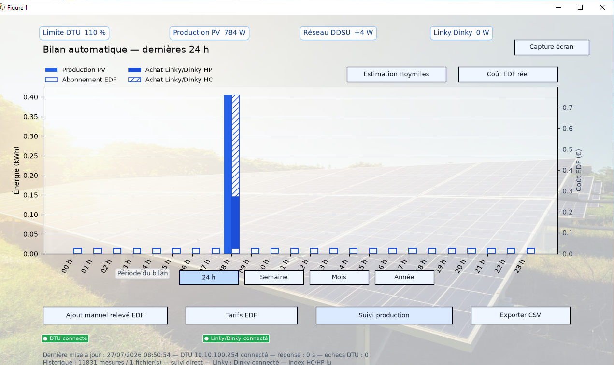

Suivi local DTU Pro-S
Lecture directe de la production PV, du réseau DDSU et de la limite configurée sur le DTU.
VERSION 7.0.1 · WINDOWS · OPEN SOURCE
Une application locale pour suivre un DTU Pro-S, visualiser la production photovoltaïque et comparer le DDSU666 avec les mesures réelles du Linky via Dinky 4.
UNE VUE FIABLE DE L’INSTALLATION
Le logiciel rend lisibles les données qui comptent : la production remontée par le DTU, l’indication réseau du DDSU666 et la puissance réellement mesurée par votre Linky.
Lecture directe de la production PV, du réseau DDSU et de la limite configurée sur le DTU.
Puissance instantanée et index heures pleines / heures creuses par Téléinfo.
Historique CSV par période et captures datées pour dialoguer avec le support Hoymiles.
SUIVI DE PRODUCTION
Production PV, réseau DDSU, Linky/Dinky et limite DTU possèdent leurs propres couleurs et une légende permanente.

INSTALLATION WINDOWS
L’installation est pensée pour rester simple. Elle ne laisse pas de terminal ouvert et conserve vos historiques locaux lors d’une mise à jour.
INSTALLER_WINDOWS.vbs.DTU + DINKY : DEUX OPTIONS RÉSEAU
Le Dinky est sur la box. Le DTU diffuse son Wi-Fi propre. Utilisez deux connexions sur le PC : Ethernet / Wi-Fi pour la box, second Wi-Fi pour le DTU.
Lorsque le DTU est relié à la box par Ethernet ou Wi-Fi, le DTU et le Dinky sont accessibles depuis le même réseau. L’installateur demande alors l’adresse IP du DTU.
BILAN EDF
Le calcul HP, HC et abonnement s’appuie sur les index Linky/Dinky, et non sur le DDSU.

QUESTIONS ESSENTIELLES
Non. Le zéro injection reste configuré et piloté par le DTU / S-Miles Cloud. L’application observe et compare les données.
Le DDSU est utile pour le système Hoymiles mais peut différer du compteur. Le Linky/Dinky est la référence retenue pour suivre les achats EDF.
Non. Les historiques, réglages et exports restent locaux sur votre ordinateur. GitHub sert uniquement à diffuser le logiciel.